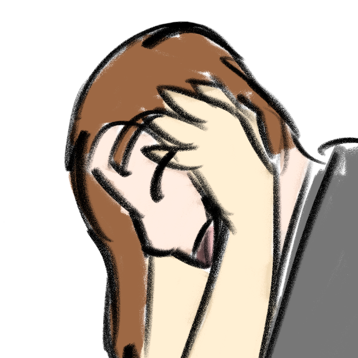

Resten av sidene på dette domenet er på Engelsk.
🌿 Om oss :
- Pronomen: Vi er et kollektiv og vil da helst at folk bruker de/dem. Individer i systemet har pronomen de selv bruker når de fronter. De kan du finne sammen med navn og en liten intro for alle her (side på Engelsk, spør om pronomen om det er noe som ikke er lett å oversette)
- Vi er et system uten en primær fronter
- Trans og skeiv
- Funkis
- Enten lokalpolitiker for Rødt i Trondheim eller aktivist, spørs på dagen
- Unngå medisinsk språk så langt det er mulig så lenge det er snakk om at vi er flere
- Forlovet til Sterling manor
- Er bare å sende meldinger med spørsmål eller hva som helst annet

Om det om at vi er et system eller plural ikke gir mening så kan du lese mer her, du burde også lese dette.
Webrings:
← Wafring shuffle →
← Fediring →
Buttons: